들뜬 분자는 빛을 내기 전에 진동 이완으로 에너지 일부를 열로 잃고 S₁의 가장 낮은 진동 준위로 내려온다. 그래서 내놓는 광자의 에너지가 흡수한 광자보다 작아 파장이 길다.
| 상태 | 뜻 |
|---|---|
| Singlet | 모든 전자 스핀이 짝지은 상태. 자기장에서 준위가 갈라지지 않는다. 짝짓지 않은 전자 0개. |
| Doublet | 자유 라디칼의 바닥 상태. 홀전자가 자기장에서 두 방향을 가질 수 있어 에너지가 조금 다른 두 상태가 된다. |
| Triplet | 한 쌍 중 전자 하나가 들뜨면서 스핀이 평행해진 상태. 짝짓지 않은 전자 2개. |
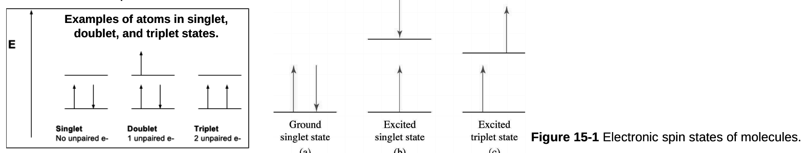
Fig 15-1 (a) 바닥 단일항 (b) 들뜬 단일항: 스핀 반대 유지 (c) 들뜬 삼중항: 스핀 평행.[보충] 들뜬 삼중항(T₁)은 같은 배치의 들뜬 단일항(S₁)보다 에너지가 낮다(Hund 규칙). 그래서 인광은 형광보다 더 긴 파장에서 나온다.
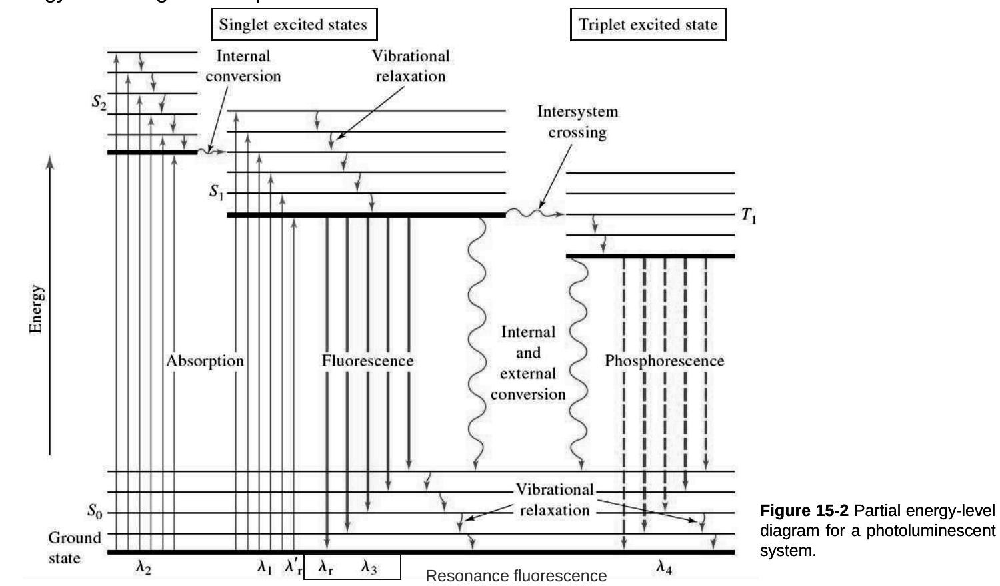
Fig 15-2 광발광계의 부분 에너지 준위도. 흡수(λ₁, λ₂) 뒤 진동 이완, 내부 전환으로 S₁ 바닥 진동 준위에 모인다. S₁→S₀ 형광(λ₃), S₁→T₁ 계간 전이, T₁→S₀ 인광(λ₄). λ₁에서 흡수해 같은 λ₁′으로 내는 것이 공명 형광이다.| 과정 | 속도(시간 척도) |
|---|---|
| 광자 흡수 | 10⁻¹⁴~10⁻¹⁵ s |
| 진동 이완 | 10⁻¹² s 이하 |
| 형광 방출 | 10⁻⁵~10⁻¹⁰ s |
| 인광 방출 | 10⁻⁴~10 s 이상. 삼중항→단일항 전이가 단일항→단일항보다 느리다(스핀 금지). |
1장(p.48)은 형광이 "약 10⁻⁵ s 안에 끝난다", 이 장은 "10⁻⁵~10⁻¹⁰ s"로 적었다. 모순은 아니다. 범위로 외운다.
들뜬 분자는 여러 단계를 거쳐 바닥 상태로 돌아간다. 빛을 내는 과정은 형광과 인광이다. 비복사 과정(radiationless)은 진동 이완, 내부 전환, 외부 전환, 계간 전이다. 가장 빠른 경로가 우세하다.
| 과정 | 내용 |
|---|---|
| 진동 이완 (vibrational relaxation) | 들뜬 분자가 용매 분자와 충돌해 진동 에너지를 빠르게 넘긴다. 용매 온도는 아주 조금 오른다. 진동 들뜬 분자의 평균 수명은 10⁻¹² s 이하다. 같은 전자 상태 안에서 가장 낮은 진동 준위로 내려간다. |
| 내부 전환 (internal conversion) | 빛을 내지 않고 같은 다중도(단일항-단일항, 삼중항-삼중항)의 낮은 전자 상태로 넘어간다. 두 상태의 진동 준위가 겹칠 때 잘 일어나며, 높은 들뜬 상태에서는 형광보다 내부 전환이 더 잘 일어난다. |
| 외부 전환 (external conversion, 충돌 소광) | 들뜬 분자가 용매나 다른 용질과 상호작용해 에너지를 넘긴다. |
| 계간 전이 (intersystem crossing) | 다른 다중도의 상태로 넘어간다. 가장 흔한 것은 S₁→T₁이다. 두 상태의 진동 준위가 겹치면 잘 일어난다. I, Br 같은 무거운 원자가 있으면 커진다(중원자 효과). |
| 인광 (phosphorescence) | 계간 전이로 T₁에 간 뒤 빛을 내며 S₀로 돌아간다. T₁ 수명 10⁻⁴~10 s 이상. 내부·외부 전환과 경쟁에서 지기 쉬워 보통 저온, 점성이 큰 매질에서만 관찰된다. |
[보충] 중원자는 스핀-궤도 짝지음을 키워 스핀이 바뀌는 전이(S₁→T₁)의 금지를 완화한다. 그래서 계간 전이가 늘고 형광은 줄고 인광은 늘어난다.
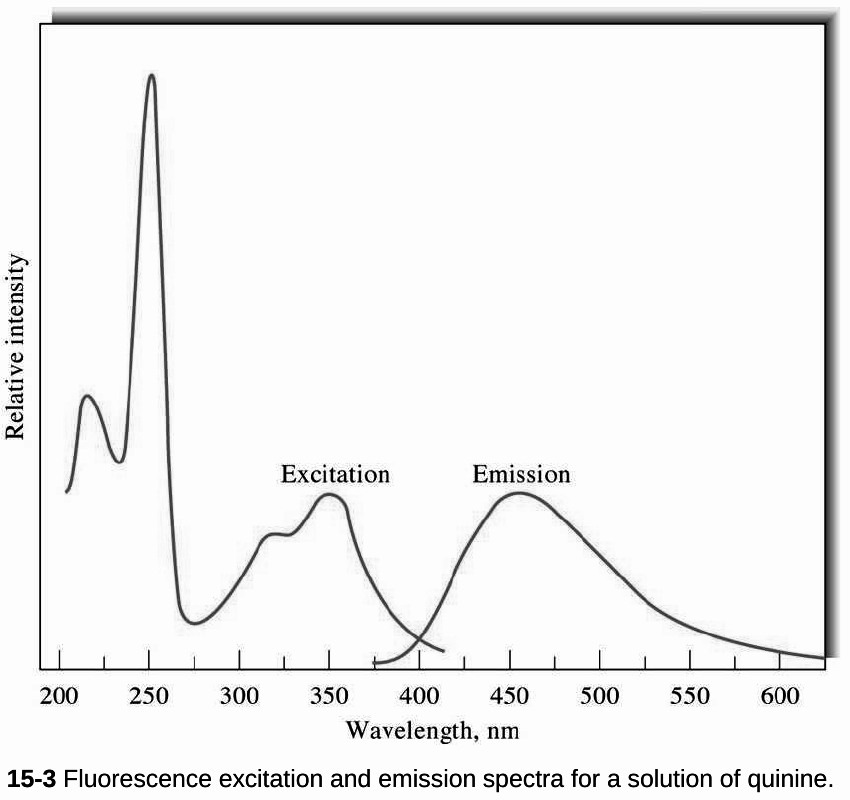
Fig 15-3 퀴닌: 들뜸 파장(250 또는 350 nm)과 상관없이 최대 방출은 450 nm다. 높은 상태로 들떠도 내부 전환으로 S₁에 내려온 뒤 형광을 내기 때문이다.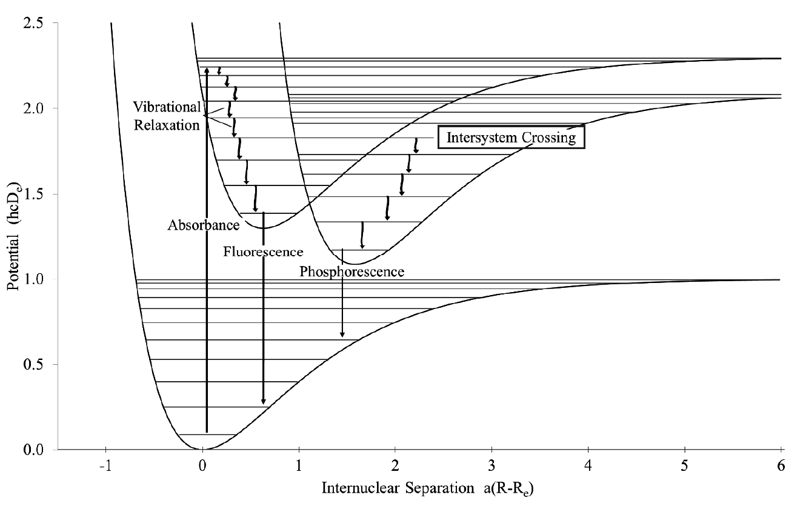
p.15 퍼텐셜 곡선. 들뜬 전자가 진동 준위가 겹치는(같은 에너지) 지점에서 다중도가 다른 상태로 계간 전이한다.슬라이드는 내부 전환을 "Intermolecular processes"로 적었지만, 문맥상 분자 내(intramolecular) 과정이다. 오타로 보인다.
양자 수득률(quantum yield), 양자효율(quantum efficiency)은 발광한 분자 수를 들뜬 분자 전체 수로 나눈 비다. 형광이 아주 센 플루오레세인은 거의 1이다. 형광이 없는 화학종은 사실상 0이다.
kf 형광, ki 계간 전이, kec 외부 전환, kic 내부 전환, kpd 선해리, kd 해리의 속도상수.
φ는 형광 속도가 모든 탈활성화 속도의 합에서 차지하는 몫이다. kf를 키우거나 나머지 k를 줄이는 구조와 환경이 형광을 세게 한다. 아래 3-6의 모든 요인이 이 식의 어느 항을 바꾸는지로 설명된다.
π,π* 상태의 양자효율이 큰 이유 세 가지. ① π→π* 몰흡광계수가 n→π*보다 100~1000배 크다. ② 고유 수명이 짧다(π,π* 10⁻⁷~10⁻⁹ s, n,π* 10⁻⁵~10⁻⁷ s). ③ 그래서 kf가 더 크다. 수명이 짧으면 비복사 과정이 끼어들 시간이 적다.
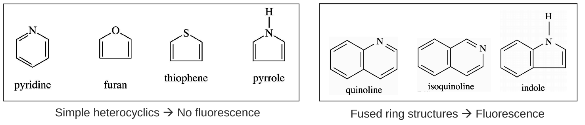
p.17 단순 헤테로고리는 형광 없음, 축합 고리는 형광 있음.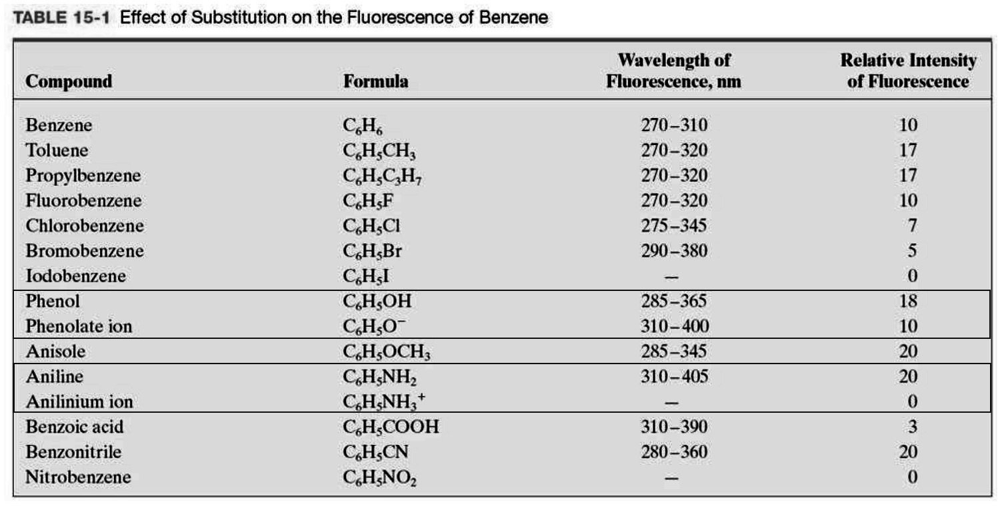
Table 15-1 벤젠 치환체의 형광. 아이오도·브로모 벤젠은 중원자 효과로 약하다(0, 5). 아닐린(20) → 아닐리늄(0), 페놀(18) → 페놀레이트(10). 나이트로벤젠은 형광이 없다(0).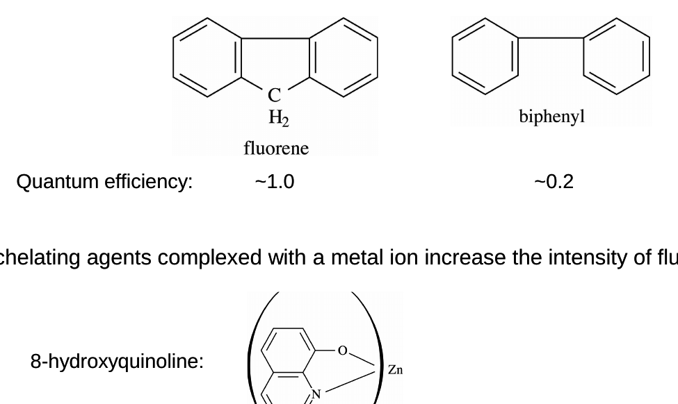
플루오렌 ~1.0, 바이페닐 ~0.2. 두 고리를 CH₂로 묶어 고정하면 형광이 세진다.강직하지 않은 분자는 부분끼리 자유롭게 진동·회전해 들뜬 에너지를 열로 잃기 쉽다. 즉 내부 전환 속도(kic)가 커져 φ가 줄어든다.
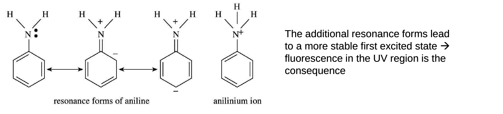
아닐린의 공명 구조(왼쪽 세 개)와 아닐리늄 이온(오른쪽). 아닐린은 추가 공명 구조가 첫 들뜬 상태를 안정화해 UV 영역 형광을 낸다. 산에서 아닐리늄이 되면 N의 비공유 전자쌍이 없어 공명이 사라지고 형광도 사라진다.형광 세기 F는 시료가 흡수한 들뜸 빛의 복사력에 비례한다.
Maclaurin 급수에서 첫 항만 남긴다. 흡광도가 작은 묽은 용액에서만 F가 농도에 직선 비례한다.
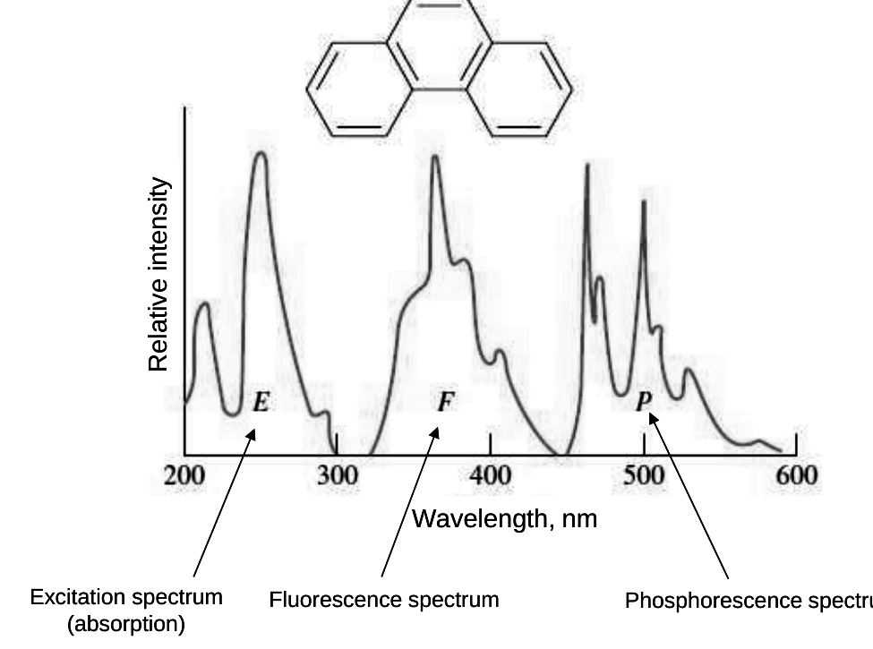
Fig 15-5 페난트렌의 들뜸(E), 형광(F), 인광(P) 스펙트럼. 왼쪽에서 오른쪽으로 갈수록 장파장이다.[보충] 형광 스펙트럼은 들뜸 스펙트럼과 거울상에 가깝다. 흡수는 S₀ 바닥 진동 준위에서 S₁의 여러 진동 준위로, 형광은 S₁ 바닥 진동 준위에서 S₀의 여러 진동 준위로 가는데 두 상태의 진동 준위 간격이 비슷하기 때문이다.
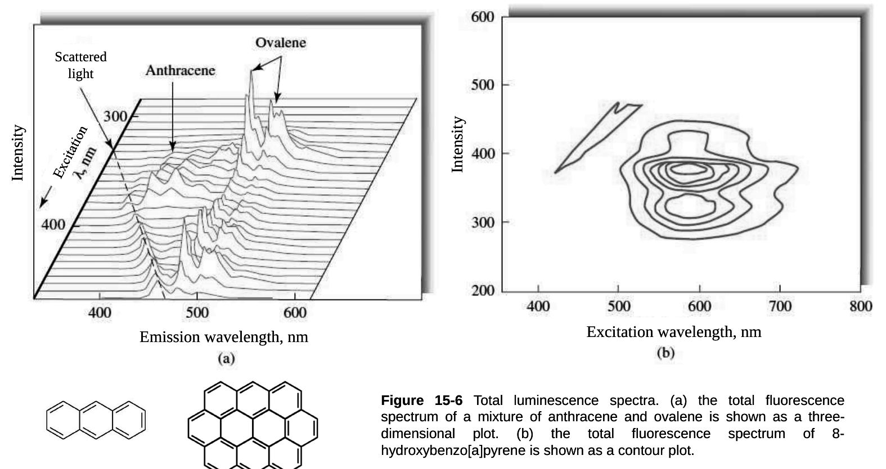
Fig 15-6 전체 발광 스펙트럼(total luminescence): 들뜸 파장과 방출 파장 두 축에 세기를 그린 3차원 그림(a)과 등고선 그림(b). 대각선 띠는 산란광이다.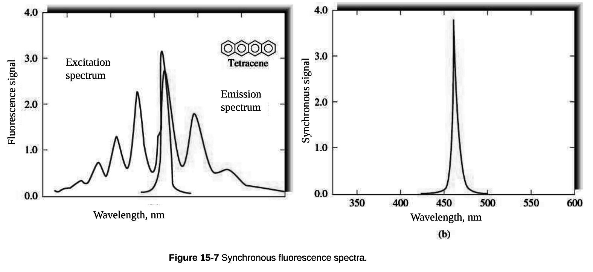
Fig 15-7 동기 형광(synchronous): 들뜸과 방출 단색화 장치를 일정한 파장 차(Δλ)로 함께 훑는다. 테트라센의 여러 봉우리가 하나의 좁은 봉우리(b)가 되어 혼합물 분석에 좋다.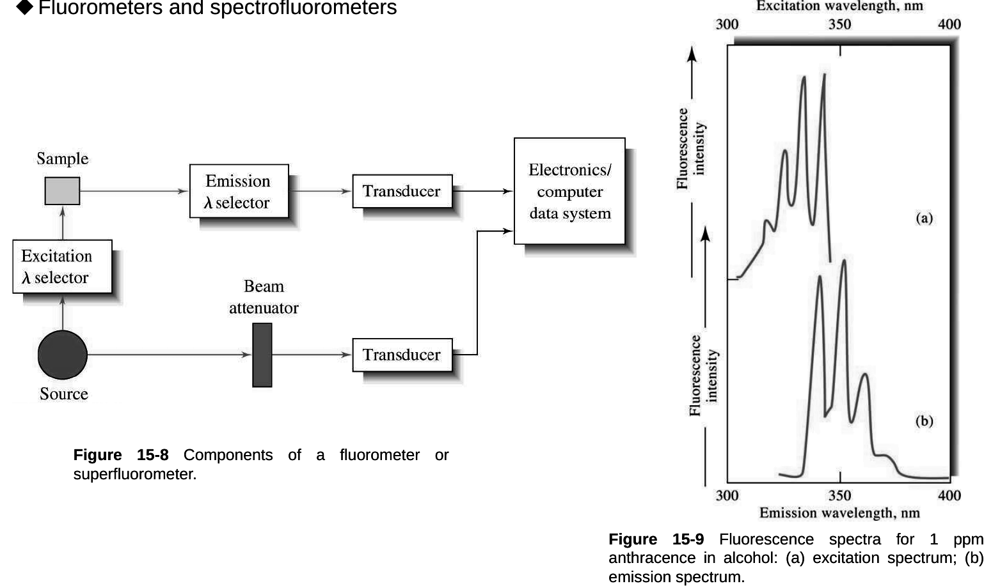
Fig 15-8 구성: 광원 → 들뜸 파장 선택기 → 시료 → 90° 방향의 방출 파장 선택기 → 변환기. 기준 빔은 감쇠기를 거쳐 기준 변환기로 간다. Fig 15-9 1 ppm 안트라센의 들뜸(a)과 방출(b) 스펙트럼.[보충] 방출광을 들뜸 빔과 수직으로 받는 이유는 투과하는 들뜸 빛이 검출기에 들어가지 않게 하려는 것이다. 그래서 형광은 어두운 배경 위의 신호를 재게 되고 감도가 높다.
| 부품 | 내용 |
|---|---|
| 광원 | 흡수법의 텅스텐·D₂ 램프보다 센 광원을 쓴다. 필터 형광계: 저압 수은등(254, 302, 313, 546, 578, 691, 773 nm 선, 용융 실리카 창). 분광형광계: 75~450 W 고압 Xe 아크 램프(300~1300 nm 연속). |
| 레이저 | 1970년대부터 사용. 가변 색소 레이저, Nd-YAG. 장점: 시료가 μL 이하로 작을 때(미세 크로마토그래피, 모세관 전기영동), 원격 감지(대기 OH 라디칼, 수중 엽록소, 평행광이 중요), 방해 형광을 줄이려고 아주 단색인 들뜸이 필요할 때. |
| 필터·단색화 | 필터 형광계는 간섭·흡수 필터. 분광형광계는 회절발 단색화 장치가 하나 이상, 보통 두 개다. |
| 변환기 | 광전자증배관(PMT)이 가장 흔하다. 광자 계수(photon counting) 방식으로 S/N을 높인다. CCD도 쓴다. |
| 셀 | 원통형·사각형 유리나 실리카. 셀 칸은 산란광이 검출기에 덜 가게 설계한다. |
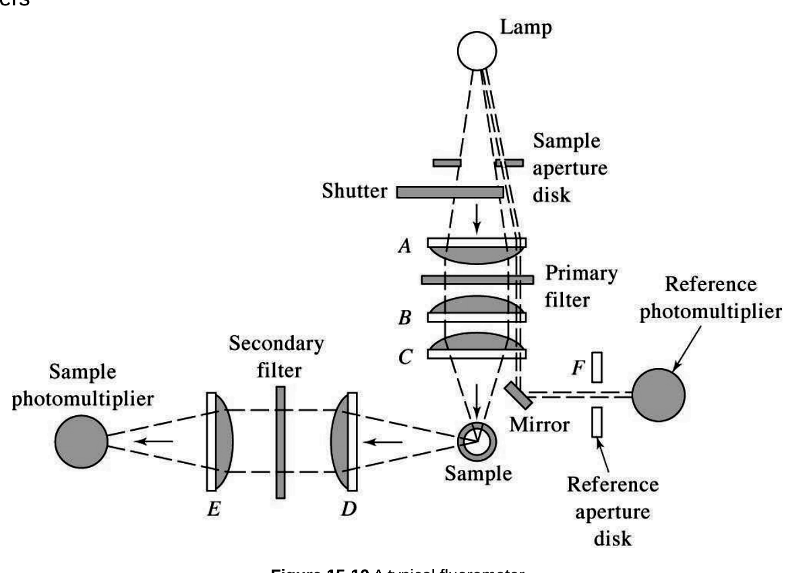
Fig 15-10 전형적인 필터 형광계: 1차 필터(들뜸)와 2차 필터(방출), 기준 광전자증배관.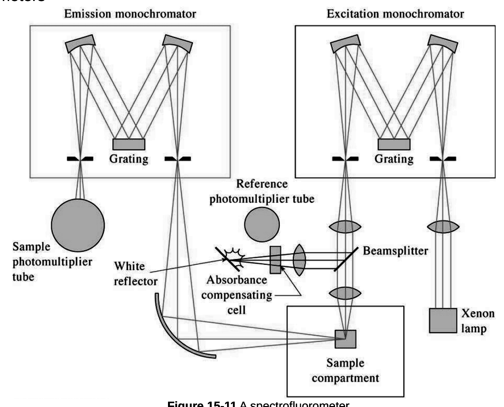
Fig 15-11 분광형광계: 들뜸·방출 단색화 장치 두 개, Xe 램프, 기준 PMT.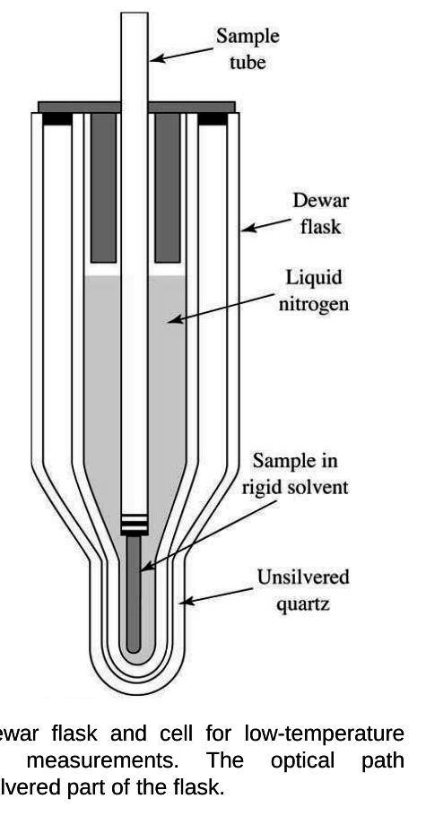
Fig 15-13 저온 인광 측정용 Dewar 플라스크.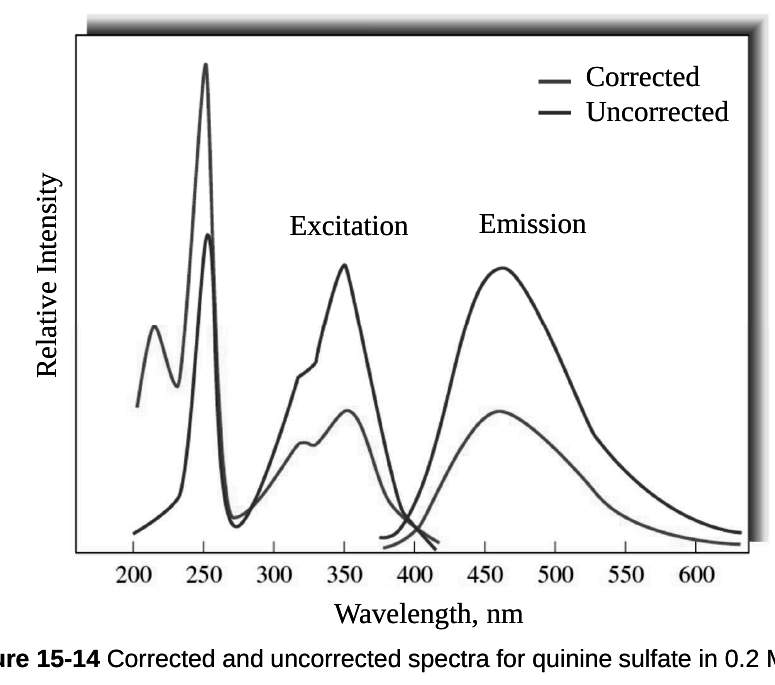
Fig 15-14 0.2 M H₂SO₄ 속 황산 퀴닌의 보정(실선)·비보정 스펙트럼. 보정하면 들뜸·방출 띠 모양이 달라진다.형광 신호 F=Kc의 비례상수 K에 들뜸 복사력 P0가 들어 있다. 그래서 P0를 키우거나 신호를 더 증폭하면 감도가 높아진다. 흡수법은 P0와 P의 비(로그)를 재므로 P0를 키워도 A가 커지지 않는다.
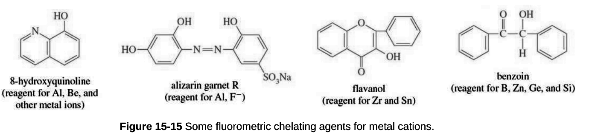
Fig 15-15 금속 양이온용 형광 킬레이트제: 8-하이드록시퀴놀린(Al, Be 등), 알리자린 가닛 R(Al, F⁻), 플라보놀(Zr, Sn), 벤조인(B, Zn, Ge, Si).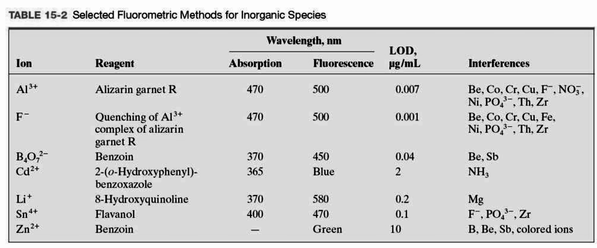
Table 15-2 무기 화학종의 형광법(시약, 들뜸·형광 파장, 검출한계, 방해 물질).Dean의 목록에 20개 넘게 있다(아데닌, 안트라닐산, 다환 방향족, 시스테인, 구아닌, 나프톨, 신경가스 사린·타분, 단백질, 살리실산). 의약품(아드레날린, 모르핀, 페니실린, 페노바르비탈, 프로카인, 레서핀, LSD), 식품, 임상 시료, 천연물에도 쓴다.
ICL 화학발광 세기, dC/dt 반응 속도, φCL 양자효율(0.01~0.2), φEX 들뜸 양자효율(반응한 분자당 들뜬 상태 수), φEM 방출 양자효율(들뜬 상태당 광자 수).
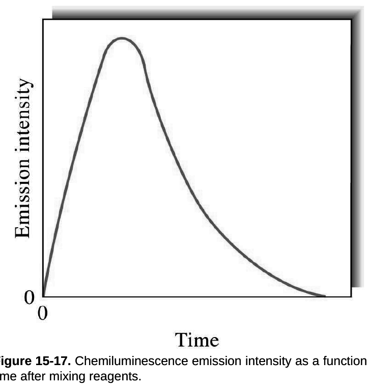
Fig 15-17 시약을 섞은 뒤 세기가 빠르게 최대에 오르고 천천히 줄어든다.대기 오염물(오존, 질소 산화물, 황 화합물)을 고감도로 잰다.
황 화합물(H₂S, SO₂, 머캅탄)은 수소 불꽃에서 S₂*를 만들어 파란 빛을 낸다.
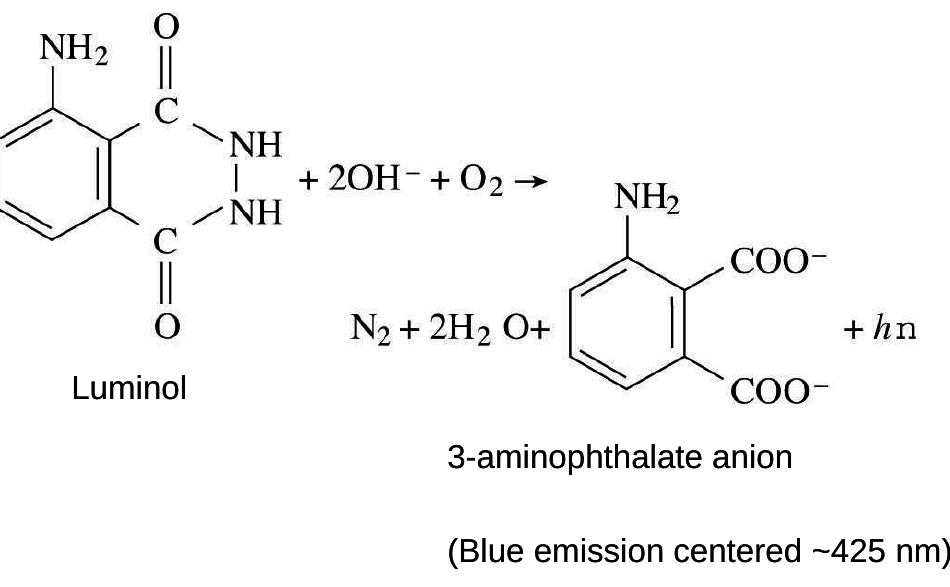
−CO−NH−NHR 작용기를 가진 유기물(루미놀)이 O₂, H₂O₂ 같은 강한 산화제와 반응해 3-아미노프탈레이트 음이온 들뜬 상태를 만들고 약 425 nm 파란 빛을 낸다.| 구별 기준 | 형광 | 인광 |
|---|---|---|
| 전이 | S₁→S₀ (스핀 허용) | T₁→S₀ (스핀 금지) |
| 시간 | 10⁻⁵~10⁻¹⁰ s | 10⁻⁴~10 s 이상 |
| 파장 | 흡수보다 김 | 형광보다 더 김 |
| 측정 조건 | 상온 용액 | 저온(77 K), 강직 매질 |
| 중원자 | 줄어든다 | 늘어난다 |
| 구별 기준 | A | B |
|---|---|---|
| 다중도 | 내부 전환: 같은 다중도 | 계간 전이: 다른 다중도 |
| 상대 | 내부 전환: 분자 내 | 외부 전환: 용매·용질과 충돌 |
| 결합 끊김 | 선해리: 내부 전환 거침 | 해리: 바로 높은 진동 준위로 |
| 빛 필요 | 광발광: 광자 흡수 | 화학발광: 반응으로 들뜸 |
| 감도·정밀도 | 형광: 감도 1~3자릿수 높음 | 흡수: 정밀도 2~5배 좋음 |
| 스펙트럼 | 들뜸: 방출 λ 고정 | 방출: 들뜸 λ 고정 |